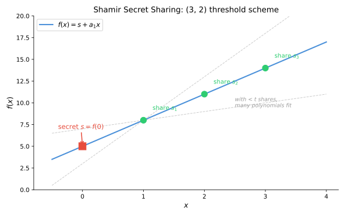

Shamir Secret Sharing
Summary
Shamir Secret Sharing (SSS) is an \((n,t)\) threshold secret sharing scheme based on polynomial interpolation over a finite field. A dealer encodes a secret as the constant term of a random degree-\((t-1)\) polynomial and distributes evaluations of the polynomial as shares. Any \(t\) shares suffice to reconstruct the secret via Lagrange interpolation; fewer than \(t\) shares reveal no information about the secret (information-theoretic security).

Formal Definition
Let \(\mathbb{F}_q\) be a finite field with \(|\mathbb{F}_q| > n\), and fix \(n\) distinct nonzero evaluation points \(\alpha_1, \ldots, \alpha_n \in \mathbb{F}_q\).
Sharing. To share a secret \(s \in \mathbb{F}_q\) with threshold \(t\):
- The dealer samples \(a_1, \ldots, a_{t-1} \stackrel{\\)}{←} \mathbb{F}q$ uniformly at random.
- Define the polynomial \(f(x) = s + a_1 x + a_2 x^2 + \cdots + a_{t-1} x^{t-1}\). Note \(f(0) = s\).
- Compute share \(s_i = (\alpha_i, f(\alpha_i))\) for each party \(i \in \{1, \ldots, n\}\).
Reconstruction. Given any \(t\) shares \(\{(\alpha_{i_1}, f(\alpha_{i_1})), \ldots, (\alpha_{i_t}, f(\alpha_{i_t}))\}\), recover \(s = f(0)\) via Lagrange interpolation:
\[s = \sum_{j=1}^{t} f(\alpha_{i_j}) \prod_{\substack{k=1 \\ k \neq j}}^{t} \frac{\alpha_{i_k}}{\alpha_{i_k} - \alpha_{i_j}}\]
Intuition for Lagrange interpolation. The idea is to construct \(t\) "selector" basis polynomials \(L_j(x)\), one per share point, where \(L_j\) evaluates to 1 at \(\alpha_{i_j}\) and 0 at every other share point. The product \(\prod_{k \neq j} \frac{x - \alpha_{i_k}}{\alpha_{i_k} - \alpha_{i_j}}\) achieves this: plugging in \(x = \alpha_{i_j}\) makes every factor \(\frac{\alpha_{i_j} - \alpha_{i_k}}{\alpha_{i_j} - \alpha_{i_k}} = 1\), while plugging in any other share point \(\alpha_{i_m}\) zeroes out the factor where \(k = m\). Then \(f(x) = \sum_j f(\alpha_{i_j}) \cdot L_j(x)\) simply "selects" the correct value at each point and interpolates smoothly between them.
Example
A \((3,2)\) scheme over \(\mathbb{F}_7\) (arithmetic mod 7):
- Secret: \(s = 5\). Dealer picks random \(a_1 = 3\), giving \(f(x) = 5 + 3x\).
- Shares: \(f(1) = 1\), \(f(2) = 4\), \(f(3) = 0\).
- Reconstruction from shares \((1, 1)\) and \((3, 0)\): \(s = 1 \cdot \frac{3}{3-1} + 0 \cdot \frac{1}{1-3} = 1 \cdot \frac{3}{2} = 3 \cdot 4 = 12 \equiv 5 \pmod{7}\), where \(2^{-1} \equiv 4 \pmod{7}\).
Notes
- An \((n,t)\) secret sharing scheme. It requires a finite field \(\mathbb{F}_q\) with \(|\mathbb{F}_q| > n\).
- A field is necessary (not just a ring) because reconstruction uses Lagrange interpolation, which requires division by \((x_i - x_j)\). Over a ring, these differences may not be invertible. Additionally, over a ring a degree-\(t\) polynomial can have more than \(t\) roots, which breaks the security argument.
- Shamir's original paper specifies arithmetic modulo a prime \(p\), i.e., \(\text{GF}(p)\) [1].
- First proposed independently by Shamir [1] and Blakley [2] in 1979. Shamir's construction is polynomial-based; Blakley's is geometric (based on hyperplane intersections).
- The scheme as described assumes an honest dealer and provides no mechanism for shareholders to verify their shares. Extensions that address this:
- Verifiable Secret Sharing (VSS): Shareholders can verify consistency of their shares. See Feldman VSS [3] (based on discrete log) and Pedersen VSS [4] (information-theoretically hiding).
- Proactive Secret Sharing: Shares are periodically refreshed so that an adversary must corrupt \(t\) parties within a single epoch, not over the lifetime of the secret.
- Publicly Verifiable Secret Sharing (PVSS): Anyone (not just shareholders) can verify that shares were correctly distributed.